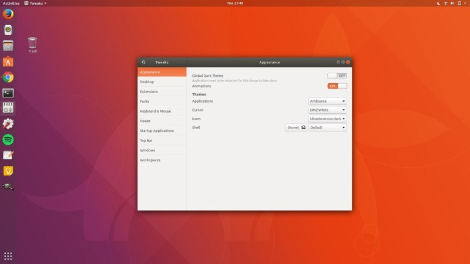
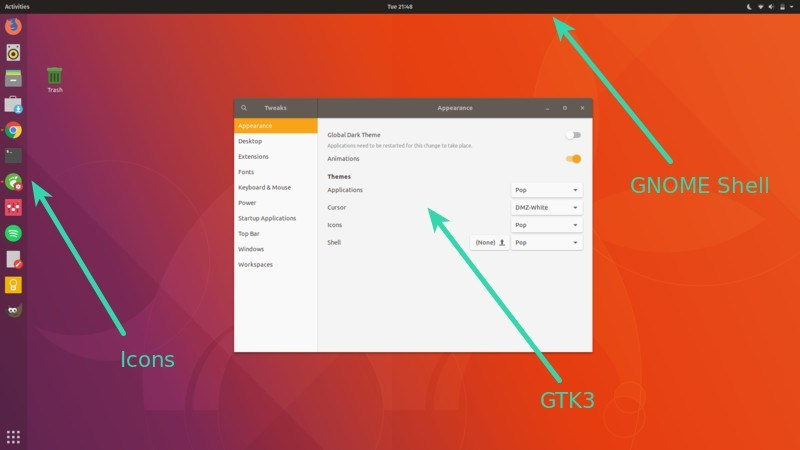
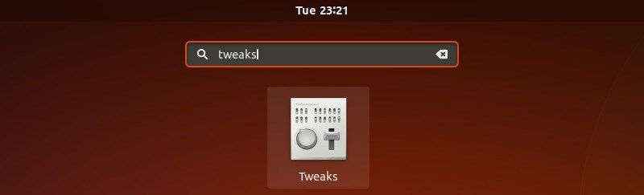
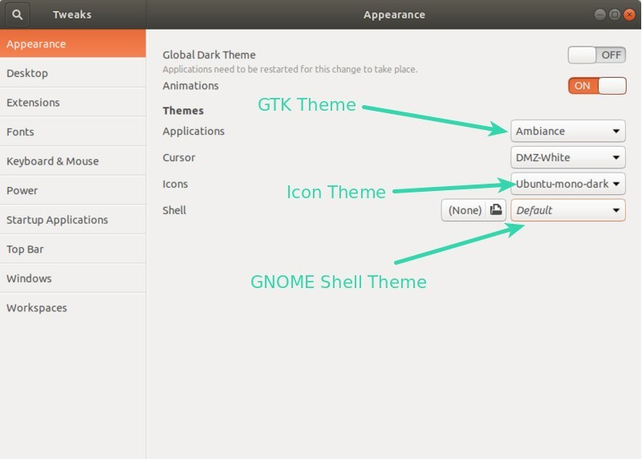
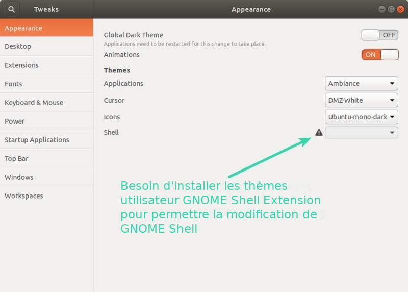
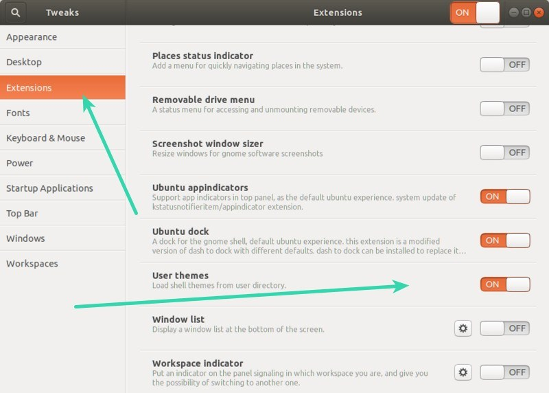
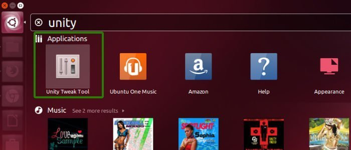
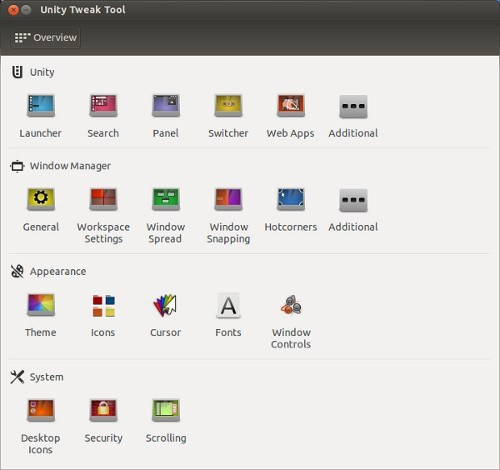
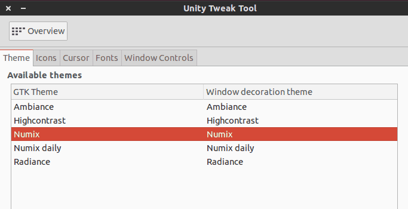

Ce guide du débutant vous montre comment installer des thèmes dans Ubuntu 18.04 et 16.04. Le didacticiel couvre l'installation des thèmes d'icônes, des thèmes GTK et des thèmes GNOME Shell.
Ubuntu 18.04 récemment sorti semble bon, mais il peut être modifié pour mieux paraître. L'une des raisons pour lesquelles j'aime utiliser Linux est la flexibilité de la personnalisation. Changer de thème donne au système une toute nouvelle apparence.
Et la meilleure chose est qu'il y a des tonnes de bons thèmes pour Ubuntu et autres distributions Linux à votre disposition. Vous pouvez jouer avec eux à votre guise.
Dans ce didacticiel, je vais vous montrer différents types de personnalisation de thème, les façons de les installer. Bien sûr, je vais discuter de la façon de changer les thèmes dans Ubuntu.
Commençons maintenant.
Connaître la différence entre les thèmes d'icônes, les thèmes GTK et les thèmes GNOME Shell
C'est l'apparence par défaut d'Ubuntu 17.10:

Et si je change les trois éléments du thème, la même chose peut ressembler à ceci:

Icônes: les icônes sont assez simples. Changer le thème des icônes changera l'apparence des icônes des applications. Vous devriez opter pour un thème d'icônes qui prend en charge un large éventail d'applications, sinon vous pourriez voir certaines icônes rester inchangées et être hors de l'écran.
Thème GTK: GTK est un framework utilisé pour construire l'interface utilisateur graphique d'une application. Fondamentalement, il détermine à quoi ressemblera une interface d'application (s'il s'agit d'une application GTK). À l'heure actuelle, Ubuntu utilise GTK3, vous devez donc télécharger les thèmes GTK3.
Thème GNOME Shell: Changer le thème GNOME Shell changera les éléments Shell tels que le panneau supérieur, l'aperçu des activités, la notification du bureau, etc.
Certains packages de thèmes fournissent les trois types d'éléments de thème pour vous offrir une expérience uniforme. D'autre part, vous trouverez également une icône autonome ou des thèmes GTK ou Shell. Bien sûr, vous pouvez les combiner pour donner à votre système Ubuntu un aspect attrayant.
Maintenant que vous connaissez les termes, procédons à l'installation des thèmes dans Ubuntu 18.04, 18.10 et 16.04.
Comment installer des thèmes dans Ubuntu 18.04 et 16.04
Pour information, j'utiliserai le terme «thèmes» pour les trois thèmes, c'est-à-dire les icônes, les thèmes GTK et GNOME Shell, sauf indication contraire.Il existe trois façons principales d'installer des thèmes dans Ubuntu:
Il existe trois façons principales d'installer des thèmes dans Ubuntu:
1. Utilisation de PPA pour installer des thèmes
Ma façon préférée d'installer des thèmes est d'utiliser un PPA. De cette façon, vous obtenez les thèmes mis à jour automatiquement. Tout ce que vous avez à faire est d'utiliser trois lignes de code, une par une.
Prenons par exemple le thème Pop OS. Il s'agit d'un magnifique package de thème développé par System76 pour sa propre distribution Pop OS Linux. Vous pouvez installer le package de thème à l'aide de la commande ci-dessous:
sudo add-apt-repository ppa:system76/pop
sudo apt-get update
sudo apt-get install pop-theme
Cela installera l'icône Pop OS, GTK3 et le thème GNOME Shell. Vous n'avez rien d'autre à faire. Vous avez maintenant les nouveaux thèmes disponibles dans votre système. Il vous suffit de le changer. Nous verrons comment changer les thèmes dans Ubuntu un peu plus loin dans cet article. Passons à d'autres façons d'installer des thèmes.
2. Using .deb packages to install themes
Certains développeurs de thèmes fournissent un exécutable .deb pour leur thème. Il vous suffit de télécharger le package .deb et de double-cliquer dessus pour installer le thème comme n'importe quel autre logiciel. Prenez le thème de l'icône Masalla par exemple. Vous pouvez télécharger les fichiers .deb depuis SourceForge.
Télécharger Masalla Icon Theme
Une fois téléchargé, il suffit de double-cliquer dessus pour installer le thème.
3. Utilisation de fichiers d'archive pour installer des thèmes
C'est peut-être la façon la plus courante de proposer des thèmes. Si vous allez sur le site Web GNOME Looks à la recherche de thèmes, vous constaterez que les thèmes se présentent sous forme d'archive zip ou tar. Ne vous inquiétez pas, l'installation de thèmes de cette façon n'est pas un gros problème.
Téléchargez le thème Ant GTK à partir du lien ci-dessous. Vous devrez vous rendre dans la section Fichiers. Si vous voyez plusieurs fichiers, c'est parce que ce thème a des variantes. Ces variantes sont similaires mais varient un peu en termes de look. Par exemple, il pourrait y avoir une variante sombre d'un thème.
Une fois que vous l'avez téléchargé, vous devrez faire un truc supplémentaire ici.
Accédez à votre répertoire d'accueil et appuyez sur Ctrl + H pour afficher les fichiers et dossiers cachés. Si vous voyez les dossiers .themes et .icons, vous êtes bon. Sinon, créez de nouveaux dossiers nommés .themes et .icons.
Vous pouvez utiliser la commande ci-dessous si vous le souhaitez:
mkdir ~/.themes
mkdir ~/.icons
N'oubliez pas que lorsque vous téléchargez la version archivée du thème GTK ou GNOME Shell, extrayez-la et copiez le dossier extrait dans le dossier .themes de votre répertoire personnel. Si vous téléchargez une version archivée du thème d'icônes, extrayez-la et copiez le dossier extrait dans le dossier .icons de votre répertoire personnel.
Pour résumer:
- .themes – for GTK and GNOME Shell themes
- .icons - pour les thèmes d'icônes
Eh bien, vous venez d'apprendre à installer des thèmes dans Ubuntu 17.10. Il est temps de voir comment changer les thèmes ici.
Comment changer les thèmes dans Ubuntu 18.04 [Bureau GNOME]
Vous devrez utiliser l'outil GNOME Tweaks à cet effet. Il est disponible dans le centre logiciel. Recherchez-le et installez-le.
Si vous préférez le terminal, vous pouvez utiliser la commande ci-dessous pour installer GNOME Tweaks:
sudo apt install gnome-tweaks
Une fois installé, recherchez-le et démarrez-le

Lorsque vous démarrez Tweaks, vous verrez les options pour modifier l'icône, GTK3 et le thème Shell sous la section Apparence. Le thème GTK est modifié à partir de l'option "Applications".

Problème:
Vous verrez peut-être un triangle sur l’option GNOME Shell qui ne vous permettra pas de changer le thème du GNOME Shell.

Cela est dû au fait que certaines fonctionnalités de GNOME Shell sont verrouillées par défaut. Ils peuvent être modifiés à l'aide des extensions GNOME Shell. Bien qu'il existe de nombreuses extensions de shell GNOME disponibles, le moyen le plus fiable consiste à utiliser les extensions de shell GNOME incluses dans le référentiel d'Ubuntu. Il s'agit de 8 à 10 extensions utiles, dont celle qui vous permettra de changer le thème du shell GNOME.
Pour l'installer, vous devrez utiliser le terminal ici. Il n'y a pas d'autre moyen:
sudo apt install gnome-shell-extensions
À ce stade, je ne me souviens pas si vous devez vous déconnecter ou redémarrer votre système. Si vous allez sous l'option Extensions dans GNOME Tweaks et que vous ne voyez pas un tas d'extensions là-bas, vous devez vous déconnecter et vous reconnecter.

Ce que vous devez faire ici est d'activer l'extension GNOME Shell "Thèmes utilisateur". Après cela, redémarrez l'application GNOME Tweaks. Maintenant, vous verrez que le triangle a disparu et vous pouvez changer le shell GNOME.
Comment changer les thèmes dans Ubuntu 16.04 [Unity desktop]
Vous pouvez installer l'outil Unity Tweak depuis Ubuntu Software Center.
Alternativement, vous pouvez également utiliser le terminal et l'installer avec la commande suivante:
sudo apt-get install unity-tweak-tool
Une fois que vous avez installé le thème ou extrait le contenu dans le répertoire ~ / .themes, démarrez Unity Tweak Tool. Accédez à Unity Dash et recherchez l'outil Unity Tweak:

Vous trouverez l'option Thème dans la section Apparence.

Une fois que vous avez sélectionné l'option Thèmes, vous trouverez ici tous les thèmes présents dans le système. Cliquez simplement sur celui que vous aimez. Il sera modifié instantanément.
Si vous le souhaitez, vous pouvez choisir de modifier les icônes uniquement à partir de l'onglet Icône. Je préfère conserver les icônes par défaut fournies avec le thème.

Voilà